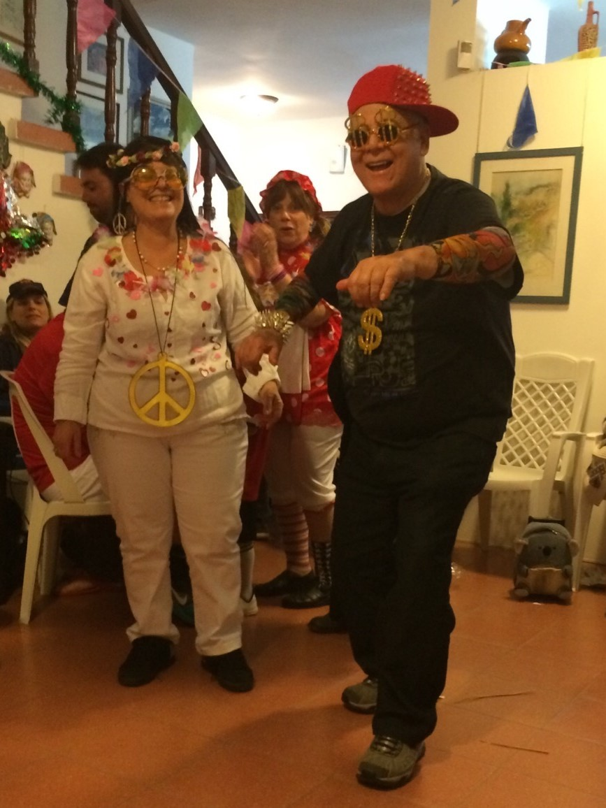
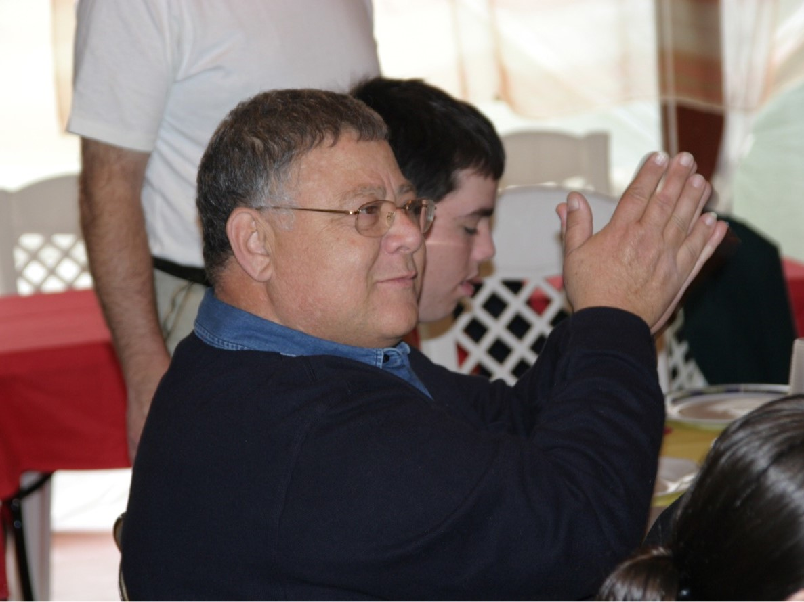
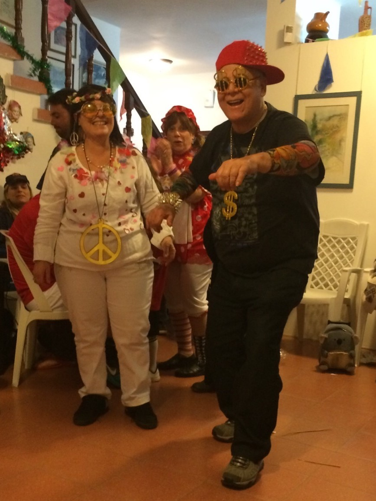
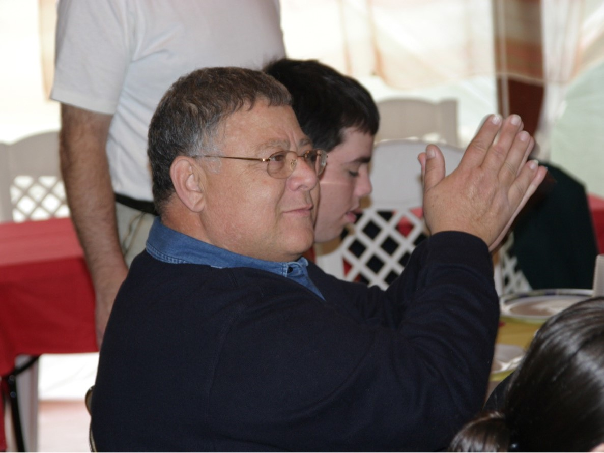

Some Memories...


 



His Favorite Music
Like This Memorial
Likes: 0
QR
רוצים לשתף? סרקו וצפו באתר מכל מכשיר
Q&A
Q1
שלושה הבדלים עיקריים בין Web2, Web1 ו-Web3
| Web3 | Web2 | Web1 | הבדלים |
|---|---|---|---|
| מצב קריאה, כתיבה ובעלות- המיקוד הוא ביזור. המשתמשים לא רק יוצרים תוכן אלא גם בעלים של נתונים ונכסים דיגיטליים דרך טכנולוגיות כמו בלוקצ'יין ו-NFTs. | מצב קריאה וכתיבה- המשתמשים התחילו ליצור תוכן בעצמם: רשתות חברתיות, בלוגים, תגובות, שיתופים וכו'. האתרים הפכו לדינאמיים ואיטראקטיביים. | מצב קריאה בלבד- האינטרנט היה בעיקר סטטי ואתרים הציגו תוכן שהמשתמשים יכלו רק לקרוא או לצפות בו, לא הייתה כמעט אינטראקטיביות. | אופי השימוש והתוכן |
| המשתמשים הם בעלי התוכן והנתונים שלהם, והם יכולים לשלוט בהם. הנתונים נשמרים בצורה מבוזרת (למשל על בלוקצ’יין), מה שמאפשר למשתמשים לשלוט על הזהות והנכסים הדיגיטליים שלהם. | חברות ענק (כמו גוגל ןפייסבוק) שולטות במידע שהמשתמשים יוצרים. המשתמשים "מוסרים" את המידע בתמורה לשירות. המשתמשים יכלו ליצור תוכן, אך עדיין לא היו בעלי המידע שלהם. | חברות גדולות שלטו במידע ובתוכן. המשתמשים לא היו בעלי תוכן או נתונים, אלא רק צרכנים שלהם. | בעלות על תוכן ונתונים |
| המודל הכלכלי מבוסס על תגמול ישיר למשתמשים. משתמשים יכולים להרוויח מטבעות קריפטו, למכור יצירות כ־NFTs, ולהשתתף בכלכלה מבוזרת (DeFi). | המודל הכלכלי מבוסס על פרסום ונתוני משתמשים. פלטפורמות כמו פייסבוק וגוגל מרוויחות ממידע אישי של המשתמשים. | רוב התוכן היה חינמי וללא פרסומות. אתרים הרוויחו מעט (אם בכלל), לרוב ממנויים או ממכירת מוצרים פיזיים. | מודל כלכלי והכנסות |
Q2
המחשת ההבדלים בעזרת תרחיש שימוש- חיפוש השאליתה "תופעות לוואי של תרופות"
| Web3 | Web2 | Web1 | הבדלים |
|---|---|---|---|
| המשתמש נכנס לאפליקציה מבוזרת של בריאות ציבורית שמופעלת בבלוקצ’יין. המידע בו מאוחסן בצורה מבוזרת – אף גוף מרכזי לא שולט בו. | המשתמש מחפש בגוגל "תופעות לוואי של תרופות", נכנס לפורומים, בלוגים, או רשתות חברתיות. | משתמש נכנס לאתר סטטי של מוסד רפואי או אנציקלופדיה רפואית. התוכן קבוע מראש, נכתב על ידי מומחים בלבד. התשובות שמתקבלות הן כלליות ולא מותאמות אישית. המידע היה "יבש", מקצועי, אך לעיתים לא מעודכן או לא מספיק מגוון. | אופי החיפוש ותוצאותיו |
| משתמשים משתפים מידע רפואי באופן אנונימי ומבוקר, תוך שמירה על פרטיות ובעלות על הנתונים שלהם. | גולשים משתפים חוויות אישיות על תופעות לוואי. ניתן לכתוב תגובות, לשאול שאלות, ואפילו לקבל המלצות. | אין אפשרות להגיב, לשאול שאלה, או לתקשר עם כותבי התוכן. | שיתוף מידע |
| אין פרסומות ממומנות או מניפולציה של אלגוריתמים לטובת רווחי פרסום. משתמשים יכולים לקבל תמריצים (טוקנים) על שיתוף מידע איכותי. | גוגל, פייסבוק ואתרים מסחריים "דוחפים" תוכן שמקדם מוצרים – למשל פרסומות לתוספים, תרופות, או קליניקות פרטיות. הנתונים של המשתמשים נאספים, נמכרים, ומשפיעים על התוכן שהם רואים. | אתרים לא ניסו "למכור" כלום, הם רק הציגו מידע בסיסי, לרוב ללא מטרות רווח. לא היו פרסומות או קידומים מסחריים. | מודל כלכלי והכנסות |